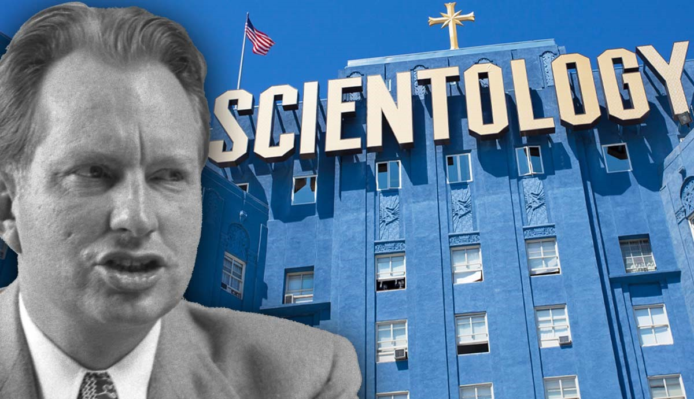

There are many controversies around scientology some of the well known ones are Criminal behavior by members of the organization, including the infiltration of the US Government. Organized harassment of people perceived as enemies of the Church of Scientology. Scientology's disconnection policy, in which some members are required to shun friends or family members who are "antagonistic" to the organization. The death of Scientologist Lisa McPherson while in the care of the organization. Robert Minton sponsored the multimillion-dollar lawsuit against Scientology for the death of McPherson. In May 2004, McPherson's estate and the Church of Scientology reached a confidential settlement. Attempts to legally force search engines to censor information critical of the Scientology organization. Allegations the organization's leader David Miscavige beats and demoralizes staff, and that physical violence by superiors towards staff working for them is a common occurrence in the organization. Scientology spokesman Tommy Davis denied these claims and provided witnesses to rebut them.
